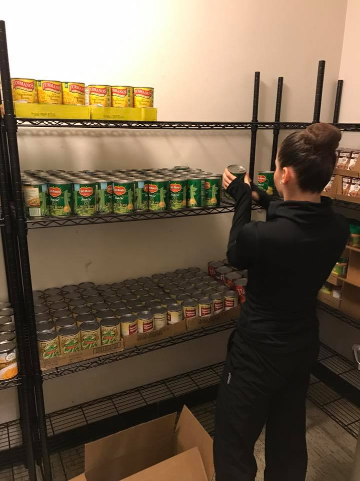
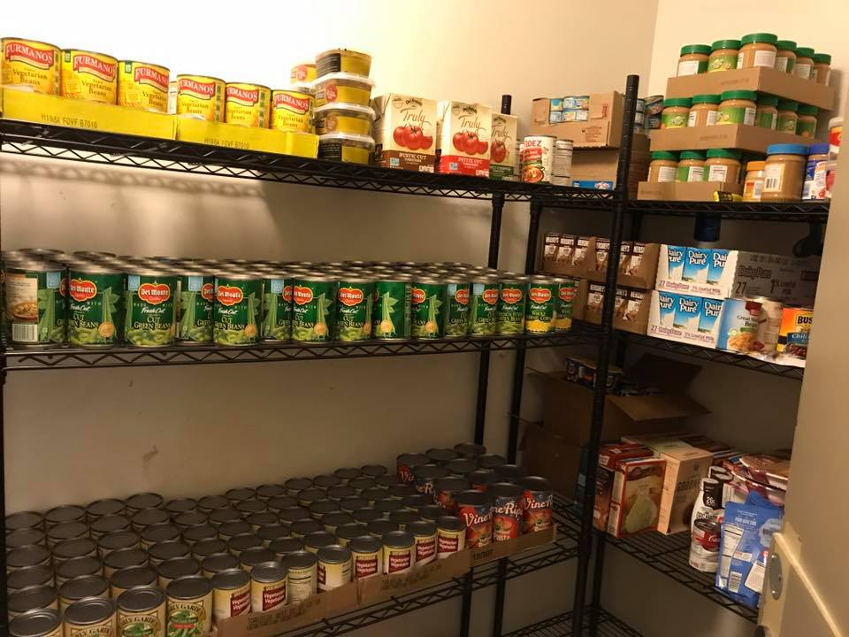
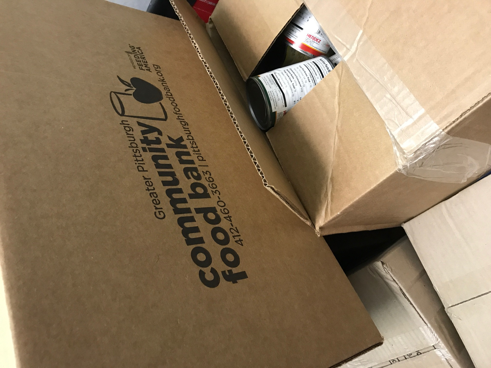
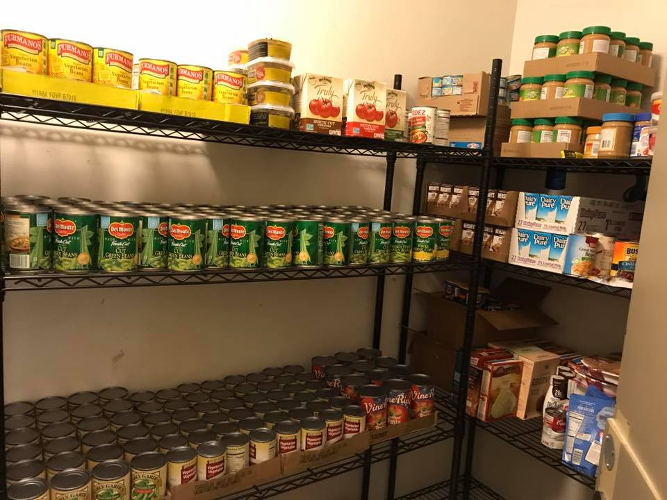
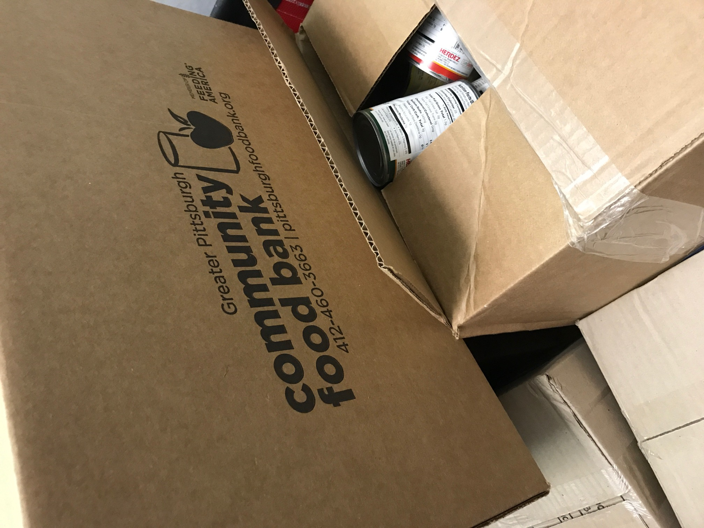

Pioneer Pantry
Pioneer Pantry strives to alleviate food insecurity by providing supplemental food free to those in need within the Point Park University community. We work to change the perception of hunger on campus and provide resources to educate the community about nutrition and healthy eating. The Pioneer Pantry is affiliated with the Greater Pittsburgh Community Food Bank.JULY UPDATE:
We know that this has been an extraordinarily difficult time for many of our campus community and that students who may have not ever utilized the pantry in the past may now find themselves in need.
As we plan for the reopening of campus for fall 2020, the Pioneer Pantry will resume food distribution weekly through the remainder of the summer. Because of the ongoing health crisis, we will not be opening up the inventory for specific selections at this time, but will instead be putting together boxes of common staples to distribute. Students are welcome to sign up to come each week to pick up a box. We ask that you sign up in advance so we know how many boxes to prepare. Distributions will be held every Wednesday from 10am - 12pm beginning July 8. You can sign up for the summer distribution dates here:
https://forms.gle/crEostPmJEZUztwc6
When you arrive on campus, please make sure you are wearing a mask and proceed to the distribution site. If the weather permits, the pantry distribution will be held outside in Village Park. If it is raining, the distribution will be held in the lobby of Lawrence Hall. Volunteers will be properly sanitizing and wearing masks to ensure your safety. If there are multiple people picking up boxes at the same time, we ask that you maintain a safe social distance from other students waiting. If you are feeling ill or experiencing any COVID-19 symptoms, please DO NOT come to campus. Contact us to make alternate arrangements.
If you have any questions, please contact Heather Fiedler at pioneerpantry@pointpark.edu




